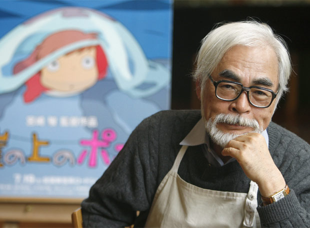

Hayao Miyazaki nació en Tokio el 5 de enero de 1941. Su padre dirigía un negocio que fabricaba timones para un avión de guerra, por lo que desde muy pequeño Miyazaki desarrolló una gran fascinación tanto por la aviación como por la literatura bélica, algo que más tarde reflejaría en sus películas a través de la inclusión de toda clase de artefactos voladores y su pacifismo. Por otro lado, su madre, una mujer fuerte por la que sentía una gran admiración, influiría decisivamente en una de la señas de identidad de su cine: las mujeres resolutivas y de gran temperamento, una rareza para la cultura nipona.
Fuera del ámbito familiar, su principal referencia fue Osamu Tezuka, “el padre del manga”, por el que el joven Miyazaki se aficionó a dibujar. A pesar de sus dotes artísticas, Hayao estudió Ciencias Políticas y Económicas en la Universidad de Gakushuin (Tokio), años durante los que leyó a muchos autores occidentales que marcarían su forma de narrar historias. Al finalizar su etapa universitaria entró como intercalador (encargado de dibujos entre movimientos) en Toei Doga, por aquel entonces una recién creada empresa de animación. Poco a poco fue adquiriendo puestos de mayor responsabilidad dentro de la misma, en la que conoció a Isao Takahata, que se convertiría en uno de sus principales colaboradores.
Tras su paso por Toei Doga, y ya como animador experimentado, pasó a formar parte de la plantilla de Nippon Animation, compañía responsable de series míticas como Heidi, Marco o Conan, el chico del futuro, esta última la primera serie que dirige Miyazaki en 1978. Un año después, ahora en una nueva empresa llamada Tokio Movie Shinsha, dirige su primera película Lupin III: El castillo de Cagliostro, además de algunos episodios de la serie Sherlock Holmes, la última en la que ha colaborado hasta el momento.
Después de varios años inmerso en un arduo proceso de lluvia de ideas que servirán de base a muchos de sus proyectos posteriores, y ante la imposibilidad de realizar un largometraje personal de manera independiente, recibe el encargo por parte de la revista Animage de realizar con total libertad creativa un manga que más tarde él mismo adaptará a la gran pantalla en la que será su primera película “como autor”: Nausicaä del Valle del Viento (1984), producida en asociación entre Tokuma Shoten y Topcraft Studio, este último compuesto principalmente de los que serán meses después los trabajadores de Studio Ghibli, fundado en junio de 1985 por Miyazaki y Takahata.
Dentro de Studio Ghibli, donde poseerá libertad de movimientos, Miyazaki se embarcará en la dirección y el guion de títulos como El castillo en el cielo (1986), Mi vecino Totoro (1988), Nicky, la aprendiz de bruja (1989), Porco Rosso (1992) o La princesa Mononoke (1997), su proyecto más ambicioso, que supuso su consagración como maestro de la animación japonesa pero cuyo esfuerzo estuvo a punto de retirarle del cine. Tras este punto de inflexión, Miyazaki volvería con fuerzas renovadas y en plena madurez como creador para elaborar el tramo más brillante de su carrera con películas como El viaje de Chihiro (Óscar a la mejor película de animación 2002), El castillo ambulante (2004) o Ponyo en el acantilado (2008), intercaladas todas ellas de labores de producción o guion en títulos menores de Studio Ghibli.